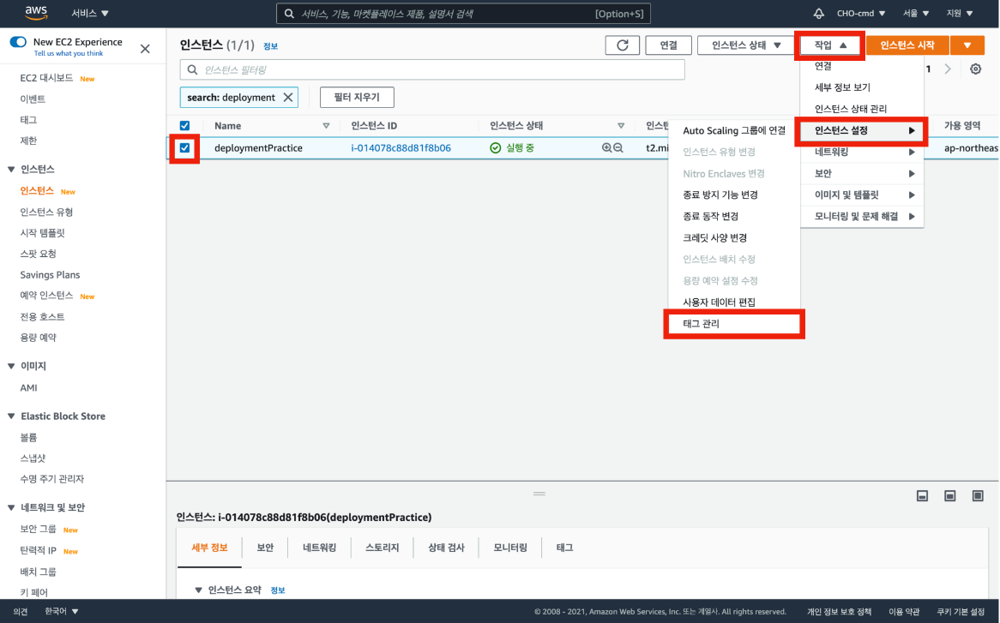

EC2 인스턴스에 태그와 역할 부여
1. EC2 인스턴스에 태그 부여
태그를 추가하는 이유는 인스턴스를 잘 식별하기 위함이다.
먼저 EC2 대시보드로 이동 후 인스턴스로 이동한다.
EC2 인스턴스에 태그를 추가하기 위해 인스턴스를 선택한 후 작업, 인스턴스 설정, 태그 관리 순서로 클릭해 이동한다.

태그 추가 버튼을 클릭한다.
태그 이름을 자유롭게 설정하고 저장 버튼을 눌러 태그를 생성한다.
2. EC2 인스턴스에 역할 부여
역할은 AWS의 개체(서비스, 사용자 등)가 다른 서비스에 접근하게 할 수 있도록 해주는 방법이다.
EC2 인스턴스에 역할을 부여함으로써 다른 AWS 서비스를 호출할 수 있는 권한을 가진다.
먼저 EC2 대시보드로 이동 후 인스턴스로 이동한다.
IAM 서비스를 이용해서 EC2 인스턴스에 역할을 부여하기 위해 인스턴스를 선택 후 작업, 보안, IAM 역할 수정 순서로 클릭해 이동한다.
새 IAM 역할 생성 버튼을 클릭해 AWS IAM 서비스로 이동한다.
역할 만들기 버튼을 클릭한다.
AWS 서비스, EC2를 선택한 후 다음: 권한 버튼을 클릭한다.
검색창에 S3를 입력하여 AmazonS3FullAccess를 선택한다.
검색창에 SSM을 입력하여 AmazonSSMFullAccess를 선택한다.
검색창에 CodeDeploy를 입력하여 AWSCodeDeployRole을 선택한 후 다음: 태그 버튼을 클릭한다.
아래 사진과 같은 화면에서는 아무런 작업 없이 바로 다음: 검토 버튼을 클릭한다.

역할 이름을 자유롭게 입력한 후 역할 만들기 버튼을 클릭한다.
메인 화면으로 돌아온 후 방금 전 생성한 역할 이름을 클릭한다.
신뢰 관계 탭에서 신뢰 관계 편집 버튼을 클릭한다.
신뢰 관계란 해당 역할을 취할 수 있는 서비스나 사용자를 명시하는 부분으로 앞서 access 정책 부여를 통해 역할을 생성해 주었지만 access 할 수 있는 서비스를 신뢰 관계에서 명시함으로써 역할이 확실히 완성된다.

처음 신뢰 관계 편집 화면으로 들어가면 Service의 값으로 ec2.amazonaws.com만 할당되어 있다.
이를 아래 사진과 같이 배열로 바꾼 후 codedeploy.ap-northeast-2.amazonaws.com값을 추가한다.
EC2 인스턴스에 생성한 역할을 적용해 주기위해 EC2 수정 페이지로 돌아와서 생성한 IAM 역할을 선택한 후 저장 버튼을 클릭한다.